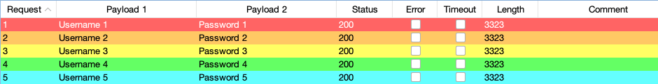
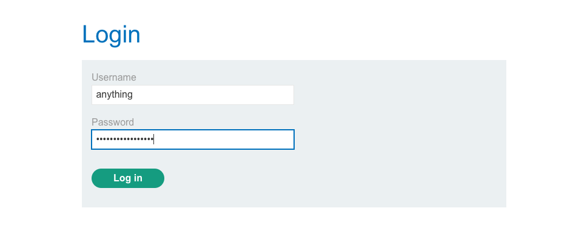
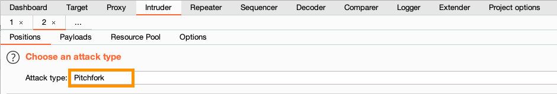
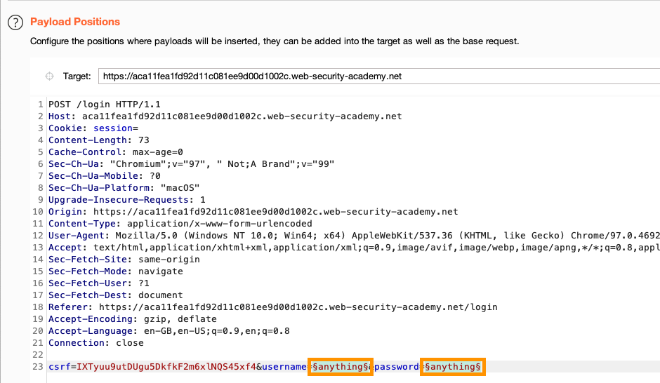
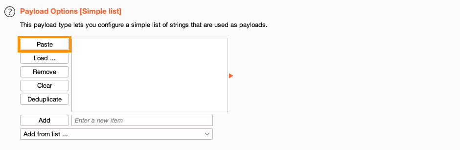
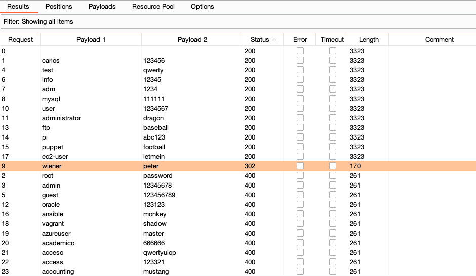

Burp Intruderのピッチフォーク攻撃によるクレデンシャルスタッフィング
Burp Intruderには複数の攻撃タイプが用意されており、定義されたペイロードポジションにどのようにペイロードを挿入するかを決定します。
ピッチフォーク攻撃タイプは、異なるリストのペイロードを同じリクエストで組み合わせて送信する必要がある場合に便利です。
このチュートリアルでは、次を学びます:
-
ピッチフォーク攻撃の仕組み
-
2組のペイロードを用いた基本的なピッチフォーク攻撃の設定方法
-
クレデンシャルスタッフィング攻撃の実行方法
クレデンシャルスタッフィングとは?
クレデンシャルスタッフィングはブルートフォース攻撃の一種で、他のサイトで使われていた既知のユーザ名とパスワードを辞書として使用してサイトへのログインを試みる攻撃です。これらの認証情報は、通常、過去の情報漏洩によって入手されたものです。
ピッチフォーク攻撃は、各ユーザ名に対応するパスワードを確実に同時に送信できるため、この目的に最適です。下記の例からわかるように、各ペイロードリストの最初の項目が同時に送信され、次に各リストの2番目の項目が送信され、これが続きます。

次のチュートリアルでは、このような攻撃を行います。
注
Burpのブラウザは、暗号化されたHTTPSプロトコルでもHTTP通信を簡単にプロキシできます。設定は不要で、Proxyタブを開き、ブラウザを開くをクリックし、Intercept無効になっているか確認してください。
ステップ1: ラボを開く
Burpのブラウザを使って、次のラボにアクセスします:
https://portswigger.net/web-security/logic-flaws/examples/lab-logic-flaws-excessive-trust-in-client-side-controls
注
このラボは、この攻撃のデモを想定しているわけではありませんが、例として使用できる簡単なログインフォームがあります。
ステップ2: Burp Intruderにログインリクエストを送信
ラボで、My accountリンクをクリックし、ログインページを開きます。任意の値でログインフォームを送信します。

Burp Suiteで、Proxy > HTTP履歴タブを開きます。POST /loginリクエストを探し、Burp Intruderに送信します。
ステップ3: 攻撃タイプの選択
ポジションタブの上部にある攻撃タイプドロップダウンメニューで、ピッチフォーク(Pitchfork)を選択します。

Intruderタブをクリックし、リクエストのあるタブに移動します。
Intruder > ポジションタブを選択します。ここに表示されたリクエストには、挿入ポイントの候補としてBurpが識別したすべての値の前後に、自動的に§マークが挿入されています。これには、ペイロードに置き換えたくないcookieなどが含まれる場合があります。§クリアボタンで、これらをすべてクリアします。
この例では、ユーザ名とパスワードのみを置き換えます。
usernameパラメータの値を選択して、§追加をクリックします。passwordパラメーターも同じようにします。

ステップ5: ユーザ名のペイロードを追加
ペイロードタブに移動します。
タブの一番上にペイロードセットオプションがあります。ここで、異なるペイロードのセットをそれぞれ設定できます。
ピッチフォーク攻撃では、ポジションと同数のペイロードセットを設定する必要があります。
ペイロードセット1を選択し、ユーザ名の候補のリストをペイロードオプションフィールドに貼り付けます。
ユーザ名一覧
carlos
root
admin
test
guest
info
adm
mysql
wiener
user
administrator
oracle
ftp
pi
puppet
ansible
ec2-user
vagrant
azureuser
academico
acceso
access
accounting
accounts
acid
activestat
ad
adam
adkit
admin
administracion
administrador
administrator
administrators
admins
ads
adserver
adsl
ae
af
affiliate
affiliates
afiliados
ag
agenda
agent
ai
aix
ajax
ak
akamai
al
alabama
alaska
albuquerque
alerts
alpha
alterwind
am
amarillo
americas
an
anaheim
analyzer
announce
announcements
antivirus
ao
ap
apache
apollo
app
app01
app1
apple
application
applications
apps
appserver
aq
ar
archie
arcsight
argentina
arizona
arkansas
arlington
as
as400
asia
asterix
at
athena
atlanta
atlas
att
au
auction
austin
auth
auto
autodiscover

ステップ6: パスワードのペイロードを追加
ペイロードセット2を選択し、パスワードの候補のリストをペイロードオプションフィールドに貼り付けます。
パスワード一覧
123456
password
12345678
qwerty
123456789
12345
1234
111111
peter
1234567
dragon
123123
baseball
abc123
football
monkey
letmein
shadow
master
666666
qwertyuiop
123321
mustang
1234567890
michael
654321
superman
1qaz2wsx
7777777
121212
0
qazwsx
123qwe
killer
trustno1
jordan
jennifer
zxcvbnm
asdfgh
hunter
buster
soccer
harley
batman
andrew
tigger
sunshine
iloveyou
2000
charlie
robert
thomas
hockey
ranger
daniel
starwars
klaster
112233
george
computer
michelle
jessica
pepper
1111
zxcvbn
555555
11111111
131313
freedom
777777
pass
maggie
159753
aaaaaa
ginger
princess
joshua
cheese
amanda
summer
love
ashley
nicole
chelsea
biteme
matthew
access
yankees
987654321
dallas
austin
thunder
taylor
matrix
mobilemail
mom
monitor
monitoring
montana
moon
moscow
daniel
ステップ7: 攻撃開始
攻撃開始をクリックします。新しいIntruder攻撃ウィンドウが開きます。ここでは、Intruderが発行したリクエストをリアルタイムで確認できます。
ステップ8: 結果の分析
任意の列で攻撃結果のソートや、フィルタバーをクリックしてフィルタの適用ができます。これにより、レスポンスや結果パターンの違いがみつけやすくなります。
この例では、wienerとpeterの組み合わせだけが、302ステータスコードを返していることがわかります。

このログインに対するレスポンスを調べれば、サーバが新しいセッションcookieを送信していることがわかります。これは、ログインが成功したことを示しているかもしれません。
注
その後のログイン試行では、各リクエストに含まれるオリジナルのCSRFトークンが新しいセッションIDに対応しないため、400エラーのレスポンスが返されます。
結果のソートだけでなく、オプションタブのGrep設定では、パターンに一致する結果にフラグを立てたり、パターンに一致するテキストの抽出ができます。
ステップ9: 結果の確認
ブラウザでログインページに戻り、wiener:peterの認証情報を使ってログインし、認証情報が有効であることを確認します。
概要
おめでとうございます。ピッチフォーク攻撃の設定と、Intruder攻撃ウィンドウでその結果を分析する方法を学びました。
次は？
実サイトでは、このような攻撃を難しくするためにレート制限などの防御機能を備えている場合もあります。Webセキュリティアカデミーにある認証関連の他の資料も確認してみませんか？